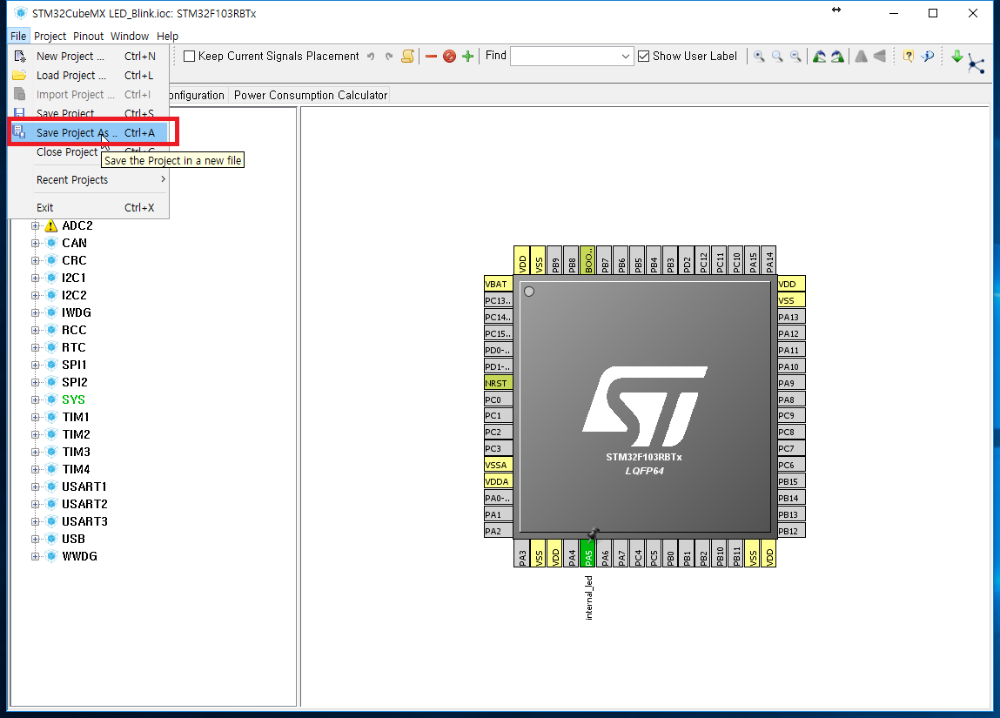
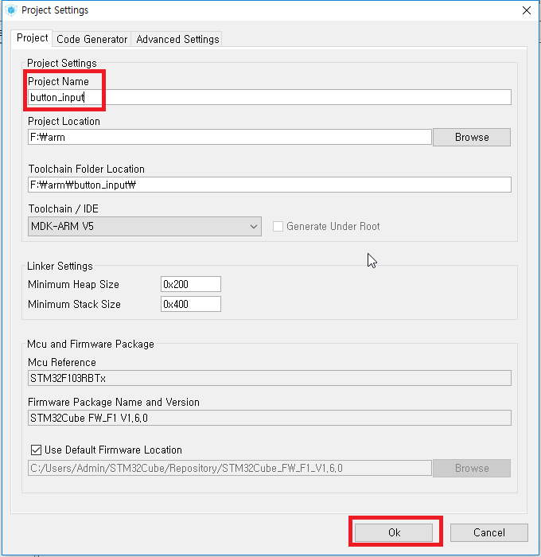
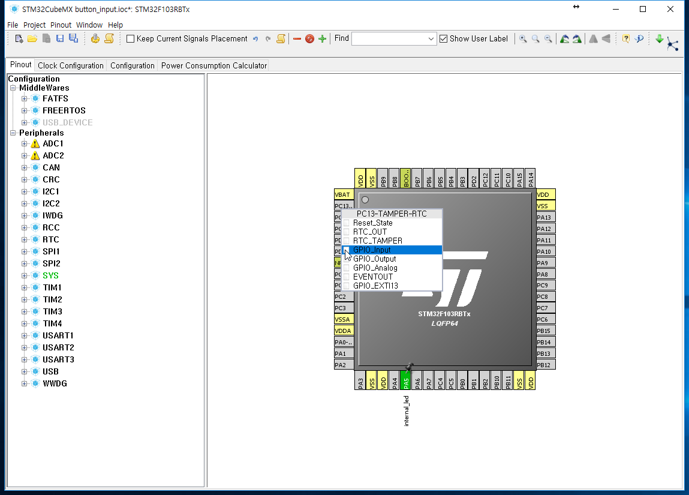
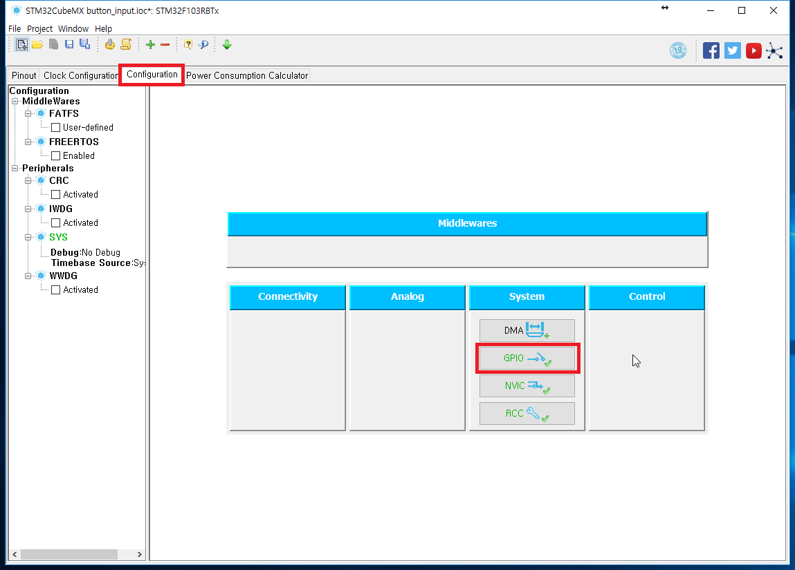
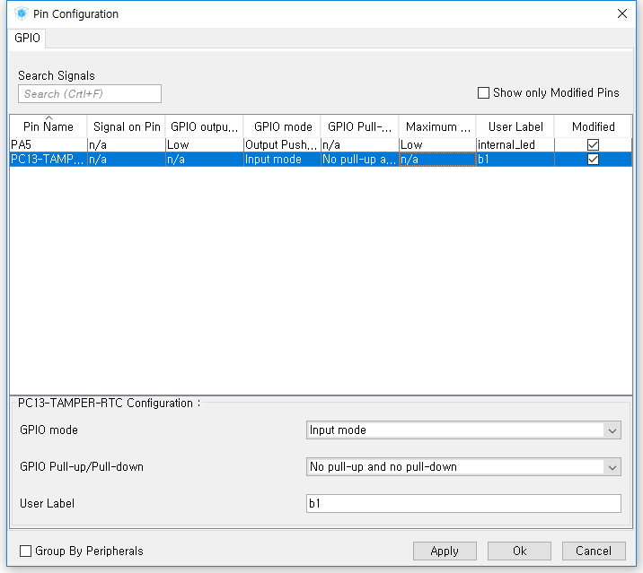
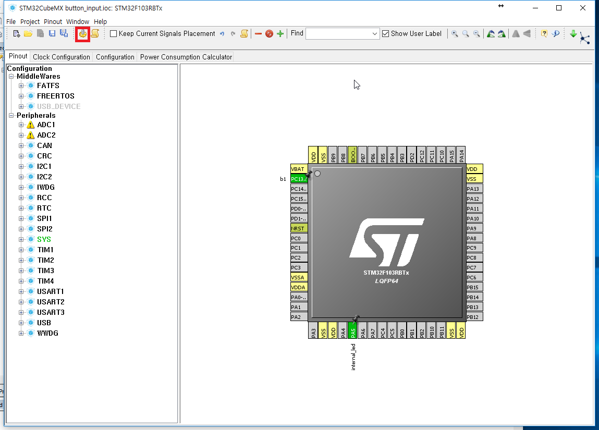

버튼 입력받기 - Button Input
Digital INPUT을 이용하여 내장 버튼을 입력받아 보도록 하겠습니다.
STM32Cube
이전 시간의 파일에서 File - Save Project As 혹은 Ctrl + A (다른이름으로 저장)를 눌러줍니다.

Project Name을 적고 Ok를 눌러 새로운 프로젝트를 만듭니다.

PC13번을 GPIO_Input으로 설정합니다.
PC13은 B1 버튼(파란색 버튼)과 연결되어 있습니다.

핀을 설정하기 위해 Configuration으로 이동합니다.

GPIO를 눌러 핀 설정창을 띄운 뒤 PC13~~ 부분에 User Label을 적어줍니다.
회로에 자체적으로 Pull-up이 되어있으므로 pull-up, pull-down은 지정하지 않습니다.

다시 Pinout으로 돌아와서 코드를 생성합니다.
코드 생성은 Project-Generate Code를 클릭하거나
Ctrl + Shift + G 를 입력하거나
왼쪽 위의 톱니바퀴 모양을 눌러도 됩니다.

Open Project를 눌러 uVision5를 실행시켜 줍니다.
uVision5
Application/User의 main.c에서 코딩을 해줍니다.
92번째줄에 있는 USER CODE BEGIN 2에 pin_state를 선언해 줍니다.
/* USER CODE BEGIN 2 */
uint8_t pin_state ;
/* USER CODE END 2 */
14번째줄의 USER CODE BEGIN 3 아래에도 코드를 넣어줍니다.
/* USER CODE BEGIN 3 */
pin_state = HAL_GPIO_ReadPin(b1_GPIO_Port, b1_Pin) ;
if (pin_state) {
HAL_GPIO_WritePin(internal_led_GPIO_Port, internal_led_Pin, GPIO_PIN_SET) ;
} else {
HAL_GPIO_WritePin(internal_led_GPIO_Port, internal_led_Pin, GPIO_PIN_RESET) ;
}
}
/* USER CODE END 3 */
F7(Build) - F8(Download) 로 보드에 프로그램을 올려줍니다.
검은색 버튼(RESET)을 눌러 보드 초기화 후 파란버튼을 눌러봅니다.